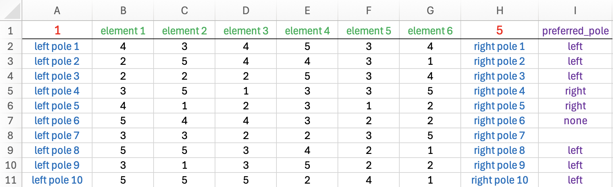

The OpenRepGrid R package is able to read files from
different other grid programs as well as standard formats (i. e.
.txt, .xlsx). All import functions follow the
same naming scheme. They start with the word import
followed by the program the file is imported from,
e.g. Gridstat. Hence the function to import a Gridstat file
is called importGridstat.
Loading OpenRepGrid files
Microsoft Excel files
You can define a grid file using Excel. The .xlsx file
has to be in a fixed format. See an example of a correct file below. The
first row contains the minimum of the rating scale (red), the names of
the elements (green) and the maximum of the rating scale (red). Below,
every row contains the left construct pole (blue), the ratings (black)
and the right construct pole (blue). The rightmost columns (purple) is
optional and contains the preferred pole. Allowed values are
left, right, none or an empty
cell.

The OpenRepGrid package comes with several sample Excel
files. If you have Excel installed, you can try opening the sample file
grid_01.xlsx as follows.
file <- system.file("extdata", "grid_01.xlsx", package = "OpenRepGrid") # path to sample file
browseURL(file) # may not work on all systemsYou can import the sample file as follows:
x <- importExcel(file)If ax Excel file contains mutliple sheet with grid data
(grid_03.xlsx has three sheets), you can import them like
so.
file <- system.file("extdata", "grid_03.xlsx", package = "OpenRepGrid") # path to sample file
x <- importExcel(file, sheet = 1:3) # indexes or sheet names to import.txt files
If you do not have Excel installed, you can define a grid using a
text editor and by saving it as a .txt file. The
.txt file has to be in a fixed format. There are three
mandatory blocks each starting and ending with a predefined tag in
uppercase letters. The first block starts with ELEMENTS and
ends withEND ELEMENTS. It contains one element per line.
The other mandatory blocks are CONSTRUCTS and
RATINGS (see below). In the block containing the constructs
the left and right pole are separated by a colon (:). To define missing
values use NA. The block PREFERRED is optional. Each line
indicated the preferred construct pole. Allowed values are left, right,
none (no pole preferred), and NA (unknown). The block RANGE is optional
but recommended. It gives the rating scale range defined by two numbers.
The order of the blocks is arbitrary. All text outside the blocks is
discarded and can be used for comments.
---------------- sample .txt file -------------------
Note: anything outside the tag pairs is discarded
ELEMENTS
element 1
element 2
element 3
END ELEMENTS
CONSTRUCTS
left pole 1 : right pole 1
left pole 2 : right pole 2
left pole 3 : right pole 3
left pole 4 : right pole 4
END CONSTRUCTS
PREFERRED
left
left
right
none
END PREFERRED
RATINGS
1 3 2
4 1 1
1 4 4
3 1 1
END RATINGS
RANGE
1 4
END RANGE
------------------ end of file ------------------To load the .txt file and save it into the object
x type the following code to the R console.
x <- importTxt("example.txt")You have to make sure, that the file exists in the current working
directory. If not you either have to specify the whole path to the file
or you must change the R working directory. A sample .txt
file is also contained in the package. The OpenRepGrid
package comes with an sample .txt file. You can load it as
follows.
file <- system.file("extdata", "grid_01.txt", package = "OpenRepGrid")
x <- importTxt(file)To open the sample .txt file try:
browseURL(file) # may not work on all systemsConvert a dataframe into a grid
Sometimes, you may want to convert data you loaded elsewhere into a
repgrid. A dataframe is a central R data structure and can easily be
converted into a repgrid object using
importDataframe. Please have a look at the docs for details
(?importDataframe). The package comes with several sample
dataframes, for example, df_element_columns. You can import
it as follows.
importDataframe(df_element_columns)Import files from other grid programs
To import from other grid programs works the same as importing a
.txt file. Either you specify the file name if it resides
in the current R working directory, you supply the whole file path if it
is not in the current directory.
Gridcor
x <- importGridcor("gridcor.dat") # file in current R working directoryGridstat
x <- importGridstat("gridstat.dat") # file in current R working directoryGridSuite
x <- importGridsuite("gridsuite.xml") # file in current R working directorysci:vesco
x <- importScivesco("scivesco.scires") # file in current R working directorySaving grids
OpenRepGrid can currently save grids in several formats.
Either as a .txt file or as an R data object.
Excel file
The most convenient format is probably an Excel file. You can save
one or more grids to Excel using saveAsExcel.
saveAsExcel(boeker, file = "boeker.xlsx") # save it to the file "boeker.xlsx"You can save a list of grids to several sheets as follows.
l <- list(boeker, bell2010)
saveAsExcel(l, file = "grids.xlsx") # save it to the file "boeker.xlsx".txt file
To save a grid as a .txt file use the function
saveAsTxt. It will save the grid as a .txt file in format
used by OpenRepGrid. This file format can also easily be
edited by hand (see importTxt for a description).
saveAsTxt(boeker, "boeker.txt") # save it to the file "boeker.txt"R data object
Another option is to save the grid as an RData object.
This is done by using the function save.
save(boeker, file = "boeker.RData") # save it to the file "boeker.RData"